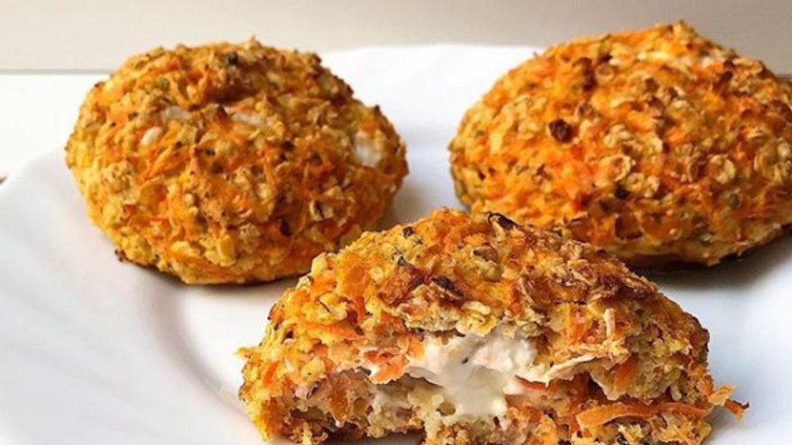
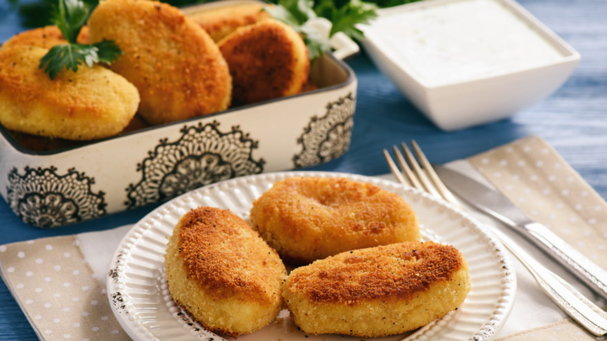

Elaboración para comenzar
Rallá las zanahorias y cociná el morrón cortado en trozos pequeños.
En un recipiente mezclá la zanahoria rallada, el morrón cocido y la avena, una vez que esté todo homogéneo agregá el huevo batido y continuá mezclando.
En una placa para horno formá bolitas con la mezcla y colocale el queso por dentro. LLevá a horno moderado por aproximadamente 10 minutos.

Elaboración
Cocinar la cebolla primero en un sartén caliente, luego de 5 minutos que se evapore agregar el aceite y cocinar hasta que esté transparente. Agregar la coliflor y cocinar por 10 minutos más. Salpimentar según gusto.Sacar del fuego, agregar queso parmesano y orégano, ricota, los dos huevos y mezclar
muy bien.En dos recipientes hondos poner en uno el huevo batido y en otro el pan rallado. Tomar una cucharada de la mezcla y pasar por huevo y después pan rallado.En un sartén poner aceite, cuando esté caliente agregar las croquetas freír por ambos lados y dejar en un papel absorbente.Se pueden acompañar con varias salsas.